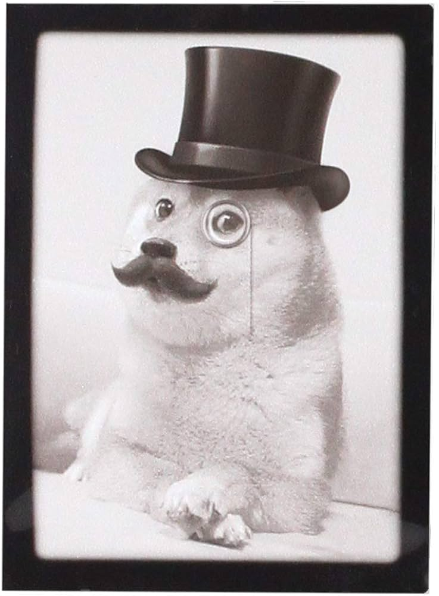

Che cos'è un Doge?
ll Doge è la più antica e la più alta magistratura della Repubblica di Venezia. La parola deriva dal latino dux, che significa guida, capo ed è il titolo attribuito ai governatori delle province nell’impero bizantino, di cui il territorio della laguna di Venezia è parte quando, tra il VII e l’VIII secolo, si ha notizia dei primi dogi. La sede del ducato è allora Eracliana (Eraclea) poi Metamauco (Malamocco) e dall’810 Rivus Altus (Rialto), il primo nucleo dell’odierna Venezia.